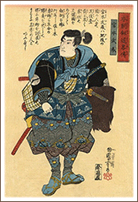
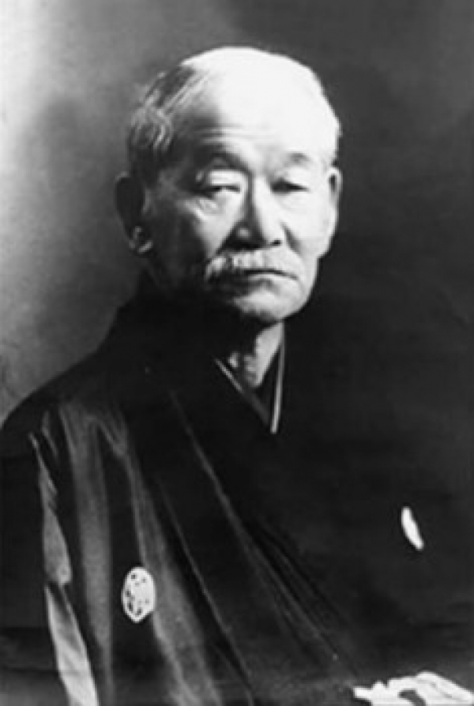
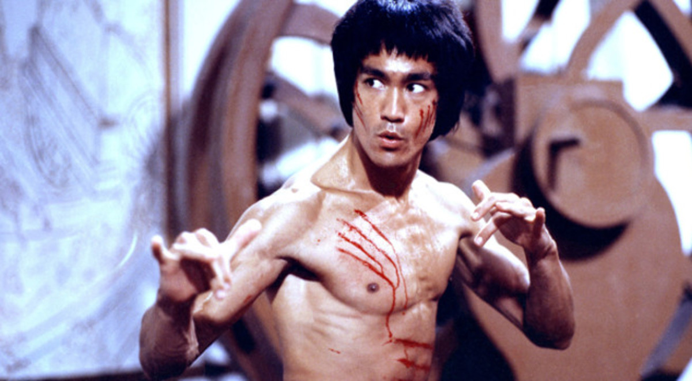
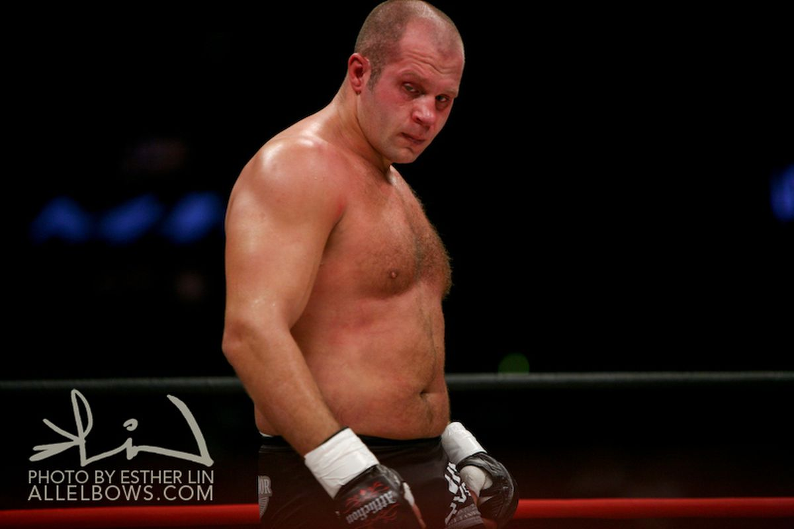
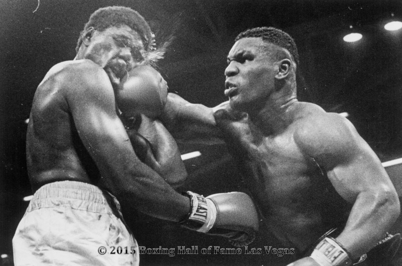

-
(1584 - 19 de mayo de 1645) fue un famoso guerrero del Japón feudal. También es conocido como Shimmen Takezo, Miyamoto Bennosuke, o por su nombre budista Niten Doraku. Segun cuentan las leyendas un buen día entró un vagabundo con dos espadas de gran calidad en una taberna pidiendo comida. El sujeto apestaba y alrededor suyo revoloteaban tres moscas atraídas por el mal olor que despedía. Al verlo sentado en una mesa, comiendo, dos vecinos del pueblo empezaron a hablar sobre aquel personaje, preguntándose a quién habría robado aquellos aceros, y tachándolo de ladrón y de pordiosero, cuando, en un momento dado y sin mediar palabra, el vagabundo alzó sus palillos en tres suaves y ágiles movimientos haciendo caer a las tres moscas sobre la mesa después de haberlas atrapado con los mismos. Ambos pueblerinos huyeron de la taberna despavoridos, pues, sin duda, ese era Miyamoto Musashi.

-
El Dr. Jigoro Kano fue el maestro fundador del arte marcial y deporte de combate Judo.Kanō logró que el Judo se incorporara con exitó al sistema educativo japonés, al ejército, e inclusive a la policía japonesa desde el principio del siglo XX, incluyendo la defensa contra golpes, y contra técnicas modernas como la defensa ante varios tipos de agresión con armas de fuego recopiladas en sus formas o kata.

-
Bruce Lee, nacido como Lee Jun-Fanfue un destacado artista marcial, maestro de artes marciales, actor, cineasta, filósofo y escritor estadounidense de origen chino, reconocido en el mundo entero por ser el renovador y exponente de las artes marciales dedicando su vida a dicha disciplina, buscando la perfección y la verdad, llegando a crear su propio método de combate y filosofía de vida, el Jun Fan Gung-Fu, que tiempo después y sumado a su concepto filosófico se llamaría, el Jeet Kune Do o el camino del puño interceptor.

-
es un político ruso y peleador de artes marciales mixtas (MMA, por sus siglas en inglés), judo y sambo. Es mundialmente famoso por sus logros en los deportes de combate, entre los que se encuentran el campeonato mundial de sambo en cuatro ocasiones y varias medallas de bronce en los campeonatos nacionales de judo. Ostenta el logro de haber sido ganador de 5 grandes campeonatos mundiales de MMA simultáneamente: el de peso abierto y el de peso pesado de Fighting Network RINGS; el mundial de peso pesado y el 2004 Grand Prix de peso completo de PRIDE Fighting Championships; y el de peso completo de la "World Alliance of Mixed Martial Arts" o W.A.M.M.A..

-
Mike, una verdadera leyenda en el mundo del boxeo por su gran resistencia y por su principal especialidad, el bloqueo.Mike pasó una infancia muy dura, su padre lo abandonó, le pegaban, y con solo 13 años de edad el boxeador ya había sido arrestado alrededor de 38 veces.Su debut profesional en el mundo del boxeo fue en el año 1985, y aproximadamente 1 año después Tyson consiguió el titulo mundial.
Entre sus peleas mas polémicas esta la del año 1997 donde fue descalificado al morder y arrancar parte de la oreja derecha de su contrincante Holyfield
